Como usar esta sebenta
Esta sebenta acompanha a UC 1993 – Executar análise de circuitos RLC. Reúne, por ordem de aula, os conteúdos das duas apresentações: a Parte 1, sobre corrente contínua, condensadores, magnetismo, indução e bobines; e a Parte 2, sobre corrente alternada, circuitos RLC, potências e sistemas trifásicos.
O que tem cada capítulo
- Teoria com as fórmulas em caixas destacadas e as figuras da sebenta.
- Exemplos resolvidos: clique no título para ver a resolução passo a passo.
- Instrumentos: simuladores e calculadoras. Mude os valores e veja o circuito reagir.
- Exercícios: escreva o resultado na unidade indicada e carregue em Verificar. Pode usar vírgula ou ponto. Aceita-se um erro de arredondamento de cerca de 2 %.
Realizações da UC
| Realização da UC | Capítulos |
|---|---|
| Caracterizar as interações eletromagnéticas | 3, 4 e 5 |
| Caracterizar a corrente alternada sinusoidal | 6 |
| Calcular grandezas elétricas em circuitos RLC série e paralelo | 1, 2, 7, 8 e 9 |
| Determinar o valor de compensação do fator de potência | 10 |
Fundamentos de eletricidade
Antes de estudar circuitos em corrente alternada é preciso dominar as grandezas básicas da corrente contínua (CC): carga, corrente, tensão, resistência e potência, e as leis que as relacionam.
1.1Eletricidade e eletrónica
A eletricidade estuda os fenómenos que resultam da presença de cargas elétricas. As cargas paradas são objeto da eletricidade estática; as cargas em movimento constituem a corrente elétrica. A eletrónica estuda o controlo do fluxo de eletrões em circuitos com componentes como díodos, transístores e circuitos integrados.
1.2Carga elétrica e campo elétrico
A matéria é formada por átomos com protões (carga positiva) e eletrões (carga negativa). Um corpo com igual número de cargas positivas e negativas diz-se eletricamente neutro. Cargas do mesmo sinal repelem-se e cargas de sinais opostos atraem-se.
A carga elétrica representa-se por Q e mede-se em coulomb (C). Um coulomb corresponde à carga de cerca de 6,25 × 1018 eletrões. À região à volta de uma carga, onde outra carga fica sujeita a uma força, chama-se campo elétrico.
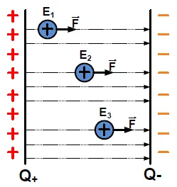
1.3Corrente elétrica
A corrente elétrica é o movimento ordenado e orientado de partículas com carga. Nos metais, essas partículas são os eletrões livres, fracamente ligados aos núcleos, que se deslocam sob a ação de um campo elétrico. Os condutores (cobre, prata, alumínio) têm muitos eletrões livres; os isoladores (plástico, borracha, baquelite) praticamente não os têm.
Antes de se conhecer o eletrão, convencionou-se que a corrente circula do polo positivo para o negativo. Os eletrões deslocam-se, na realidade, em sentido contrário, mas o sentido convencional manteve-se e é o que se usa nos esquemas.
Exemplo resolvido 1.1 Uma carga de 3600 μC atravessa a secção de um fio em 12 s. Qual é a intensidade da corrente?
1.4Potencial e diferença de potencial
O potencial elétrico num ponto é o trabalho necessário, por unidade de carga, para levar uma carga do infinito (potencial zero) até esse ponto. A diferença de potencial (d.d.p.) ou tensão entre dois pontos é o trabalho necessário para deslocar uma carga unitária de um ponto ao outro. Representa-se por U (ou V) e mede-se em volt (V).
Para haver corrente é necessário um campo elétrico no condutor, isto é, uma diferença de potencial entre as suas extremidades. É isso que fornecem as pilhas, as baterias e os geradores.
1.5Grandezas e unidades
| Grandeza | Símbolo | Unidade SI |
|---|---|---|
| Carga elétrica | Q | coulomb (C) |
| Intensidade da corrente | I | ampere (A) |
| Tensão (d.d.p.) | U ou V | volt (V) |
| Resistência elétrica | R | ohm (Ω) |
| Potência elétrica | P | watt (W) |
| Energia elétrica | W ou E | joule (J); na prática kWh (1 kWh = 3,6 MJ) |
| Prefixo | Símbolo | Fator | Exemplo |
|---|---|---|---|
| mega | M | 10⁶ | 1 MΩ = 1 000 000 Ω |
| quilo | k | 10³ | 3,3 kΩ = 3300 Ω |
| mili | m | 10⁻³ | 50 mA = 0,05 A |
| micro | μ | 10⁻⁶ | 100 μF = 0,0001 F |
| nano | n | 10⁻⁹ | 100 nF = 0,1 μF |
| pico | p | 10⁻¹² | 22 pF |
1.6Resistência e resistividade
A resistência elétrica é a oposição que um corpo oferece à passagem da corrente, devida à dificuldade dos eletrões em se moverem na estrutura atómica do material. Ao passar a corrente, a energia é dissipada sob a forma de calor. Num condutor de comprimento L e secção S, a resistência depende do material através da sua resistividade ρ:
- A resistência aumenta com o comprimento e diminui com a secção.
- Depende também do material e da temperatura (nos metais, aumenta com a temperatura).
- Resistividades a 20 °C: prata 1,6 × 10⁻⁸ Ω·m; cobre 1,7 × 10⁻⁸ Ω·m; alumínio 2,8 × 10⁻⁸ Ω·m.
Exemplo resolvido 1.2 Resistência de um fio de cobre com 4 mm de diâmetro e 10 km de comprimento.
1.7Código de cores das resistências
O valor das resistências de baixa potência é indicado por anéis coloridos. No código de quatro anéis, os dois primeiros são algarismos, o terceiro é o multiplicador (número de zeros) e o quarto é a tolerância.
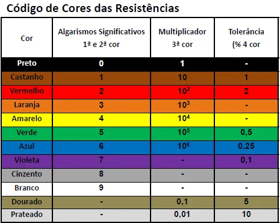
Exemplo resolvido 1.3 Qual é o valor de uma resistência laranja – azul – vermelho – dourado?
1.8Lei de Ohm
Georg Ohm verificou que, num condutor a temperatura constante, a corrente é diretamente proporcional à tensão aplicada. Para a mesma resistência, se a tensão duplica, a corrente duplica. Para a mesma tensão, a corrente e a resistência são inversamente proporcionais: se R aumenta, I diminui.
Exemplo resolvido 1.4 Uma resistência percorrida por 150 μA tem aos seus terminais 1,8 V. Qual é o seu valor?
1.9Potência elétrica e efeito Joule
A passagem da corrente por um condutor aquece-o: os eletrões chocam com os átomos e a energia elétrica transforma-se em calor. É o efeito Joule, útil em aquecedores, secadores, ferros de engomar e fornos, e indesejado nos cabos e componentes, onde representa perdas.
Exemplo resolvido 1.5 Uma resistência de 50 Ω é percorrida por 2 A durante 2 horas. Calcule a potência e a energia consumida.
1.10Associação de resistências
Em série, as resistências são percorridas pela mesma corrente e a tensão total divide-se por elas. Em paralelo, estão todas sujeitas à mesma tensão e a corrente total divide-se pelos ramos.
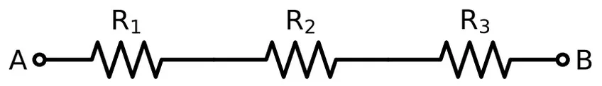
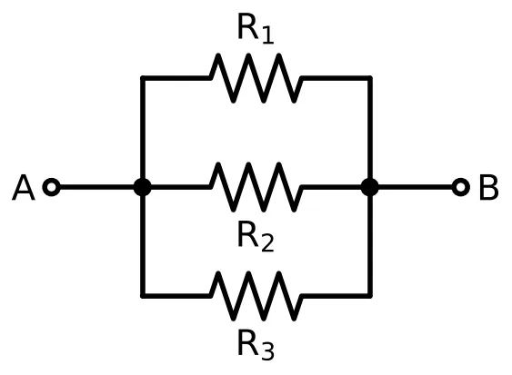
Exemplo resolvido 1.6 R1 = 100 Ω está em série com o paralelo de R2 = 220 Ω e R3 = 330 Ω. Calcule Req.
1.11Associação de geradores
Em série aditiva (polo + de um ligado ao − do seguinte), as tensões somam-se: Ueq = U1 + U2 + … Em série subtrativa (polos iguais ligados), subtraem-se. Em paralelo, só se associam geradores de tensões iguais: a tensão mantém-se e as correntes fornecidas somam-se, o que permite fornecer mais corrente.
1.12Aparelhos de medida
- Voltímetro: mede a tensão; liga-se em paralelo com o elemento. Deve ter resistência interna muito elevada, para não desviar corrente.
- Amperímetro: mede a corrente; liga-se em série, abrindo o circuito. Deve ter resistência interna muito baixa, para não alterar a corrente.
- Ohmímetro: mede a resistência com o circuito desligado e o componente isolado do resto do circuito.
- Wattímetro: mede a potência ativa; tem um circuito de tensão (paralelo) e um de corrente (série).
- Multímetro: reúne as funções anteriores; deve escolher-se a grandeza e a escala antes de ligar.
- Osciloscópio: mostra a forma de onda de uma tensão no tempo (capítulo 6).
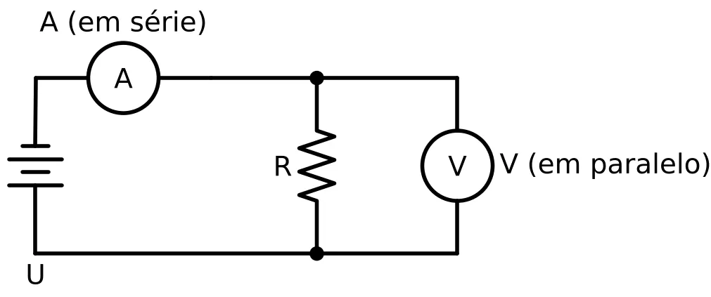
Exercícios
1.Calcule a carga que atravessa a secção de um condutor durante 5 minutos, com uma corrente de 50 mA.
Ver resolução
2.Que corrente percorre uma resistência de 3 kΩ sujeita a 300 V?
Ver resolução
3.Indique o valor e os limites de uma resistência castanho – preto – amarelo – dourado.
Ver resolução
4.Calcule a resistência equivalente de 100 Ω, 220 Ω e 330 Ω: a) em série; b) em paralelo.
Ver resolução
5.Um aquecedor de 2 kW funciona a 230 V. Calcule a corrente, a resistência e a energia consumida em 3 h.
Ver resolução
6.Explique porque é que um amperímetro deve ter resistência interna muito baixa.
Ver resposta
Condensadores
O condensador armazena carga elétrica e, com ela, energia no campo elétrico. É uma peça central da Parte 2: é com condensadores que se compensa o fator de potência.
2.1Constituição e aplicações
O condensador é formado por duas placas condutoras, as armaduras, separadas por um isolante, o dielétrico (ar, papel, cerâmica, plástico, óxido de alumínio). Usa-se na filtragem de fontes de alimentação, no acoplamento de sinais, em temporizadores, no arranque de motores monofásicos e na compensação do fator de potência (capítulo 10).
2.2Tipos
- Eletrolíticos: capacidades elevadas; são polarizados – é obrigatório respeitar a polaridade e a tensão máxima marcadas (por exemplo, 4700 μF / 35 V).
- Cerâmicos: pequenos valores, em disco; usados em altas frequências.
- De poliéster e de polipropileno: não polarizados; os de polipropileno usam-se em CA (motores, compensação).
- Variáveis e ajustáveis: capacidade regulável, por exemplo na sintonia de rádio.
2.3Capacidade
A capacidade é a propriedade de o condensador armazenar carga. Representa-se por C e mede-se em farad (F): um condensador de 1 F armazena 1 C por cada volt aplicado.
A capacidade aumenta com a área das armaduras (A) e com a permitividade do dielétrico (ε), e diminui com a distância entre armaduras (d). Como o farad é muito grande, usam-se submúltiplos: mF (10⁻³), μF (10⁻⁶), nF (10⁻⁹) e pF (10⁻¹²).
2.4Energia armazenada
A energia cresce com o quadrado da tensão: duplicar U quadruplica W. É essa energia que um flash fotográfico liberta de uma só vez.
Exemplo resolvido 2.1 Que energia armazena um eletrolítico de 4700 μF carregado a 35 V?
2.5Carga e descarga
Um condensador ligado a uma fonte através de uma resistência não carrega instantaneamente. A rapidez depende da constante de tempo τ = R · C (em segundos). Ao fim de τ, o condensador atinge 63 % da tensão final (na carga) ou desce a 37 % (na descarga); ao fim de 5τ considera-se completamente carregado ou descarregado.
2.6Descarga em segurança
Um condensador pode manter a carga muito depois de desligado. Antes de lhe mexer:
- Desligar e isolar: desligar a alimentação e retirar a ficha.
- Aguardar: a resistência de descarga interna pode não existir ou estar avariada.
- Medir a tensão com o multímetro em V DC, numa escala acima da tensão nominal.
- Descarregar por resistência, com pontas isoladas, durante pelo menos 5τ.
- Voltar a medir e confirmar cerca de 0 V.
- Se ficar guardado, unir os terminais com um fio, porque a tensão pode reaparecer (absorção dielétrica).
Exemplo resolvido 2.2 Escolha da resistência para descarregar um condensador de 4700 μF a 35 V com R = 100 Ω.
2.7Associação de condensadores
Em série, todos os condensadores ficam com a mesma carga Q (as armaduras interiores carregam-se por indução) e a tensão total divide-se: U = U1 + U2 + … Como U = Q / C, o condensador de menor capacidade fica com a maior tensão – é preciso verificar que esta não ultrapassa a sua tensão nominal.
Em paralelo, todos ficam sujeitos à mesma tensão e as cargas somam-se: QT = Q1 + Q2 + … Ligar em paralelo equivale a aumentar a área das armaduras. A tensão máxima do conjunto é a do condensador com menor tensão nominal.
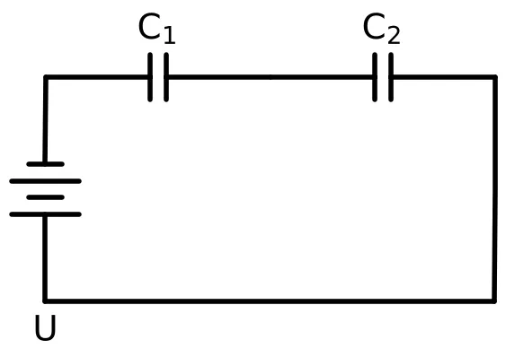
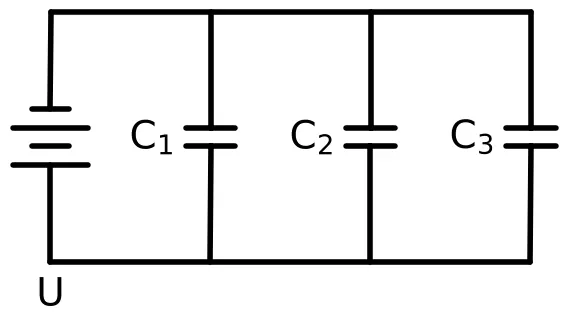
| Associação | Resistências | Condensadores |
|---|---|---|
| Série | RT = R1 + R2 + R3 | 1/CT = 1/C1 + 1/C2 + 1/C3 |
| Paralelo | 1/RT = 1/R1 + 1/R2 + 1/R3 | CT = C1 + C2 + C3 |
Exemplo resolvido 2.3 – série C1 = 10 μF e C2 = 15 μF em série a 12 V. Calcule CT, Q, U1, U2 e a energia.
Exemplo resolvido 2.4 – paralelo 2,2 μF, 4,7 μF e 10 μF em paralelo a 24 V. Calcule CT e as cargas.
Exemplo resolvido 2.5 – mista C2 = 4 μF e C3 = 8 μF em paralelo; o conjunto em série com C1 = 6 μF, a 18 V.
Exercícios
1.Um condensador de 100 μF é ligado a 9 V. Calcule a carga e a energia armazenada.
Ver resolução
2.Três condensadores de 12 μF em série estão ligados a 36 V. Calcule CT, Q e a tensão em cada um.
Ver resolução
3.Um condensador de 3 μF e outro de 6 μF estão em série sob 12 V. Qual fica com maior tensão? Calcule U1 e U2.
Ver resolução
4.Condensadores de 1 μF, 2,2 μF e 4,7 μF em paralelo a 10 V. Calcule CT e a carga total.
Ver resolução
5.Um condensador cerâmico tem o código 473. Qual é a sua capacidade em nF?
Ver resolução
Magnetismo e eletromagnetismo
Ímanes, campos magnéticos e a ligação entre corrente e magnetismo: a base dos motores, relés, transformadores e bobines.
3.1Ímanes e polos magnéticos
Um íman atrai objetos de ferro e aço. Os ímanes naturais são fragmentos de magnetite, um minério abundante na região da Magnésia, na Grécia (daí o nome). Os ímanes artificiais obtêm-se magnetizando materiais ferromagnéticos: ferro, níquel, cobalto e algumas ligas. Papel, vidro, plástico e metais como o alumínio, o cobre, a prata e o ouro não são atraídos.
- Um íman tem dois polos, norte (N) e sul (S), onde a atração é mais intensa.
- Polos do mesmo nome repelem-se; polos de nomes diferentes atraem-se.
- Inseparabilidade dos polos: cortando um íman ao meio obtêm-se dois ímanes completos.
3.2Magnetização
Num material ferromagnético não magnetizado, os pequenos domínios magnéticos estão orientados ao acaso e os seus efeitos anulam-se. Aproximando um íman potente (ou fazendo passar corrente numa bobina à sua volta), os domínios orientam-se e o material passa a comportar-se como um íman: é a magnetização. Acima de uma certa temperatura, o ponto de Curie, o material perde as propriedades magnéticas.
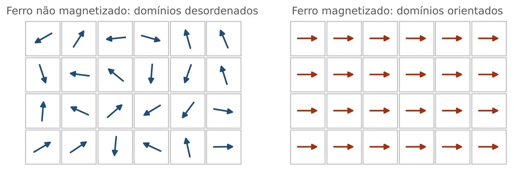
3.3Campo magnético
O campo magnético é a região à volta de um íman, de um condutor percorrido por corrente ou de cargas em movimento, onde se manifestam forças magnéticas. É uma grandeza vetorial, representada por B (indução magnética) e medida em tesla (T). Representa-se por linhas de força: linhas fechadas que, no exterior do íman, saem do polo norte e entram no polo sul. Onde as linhas estão mais juntas, o campo é mais intenso.
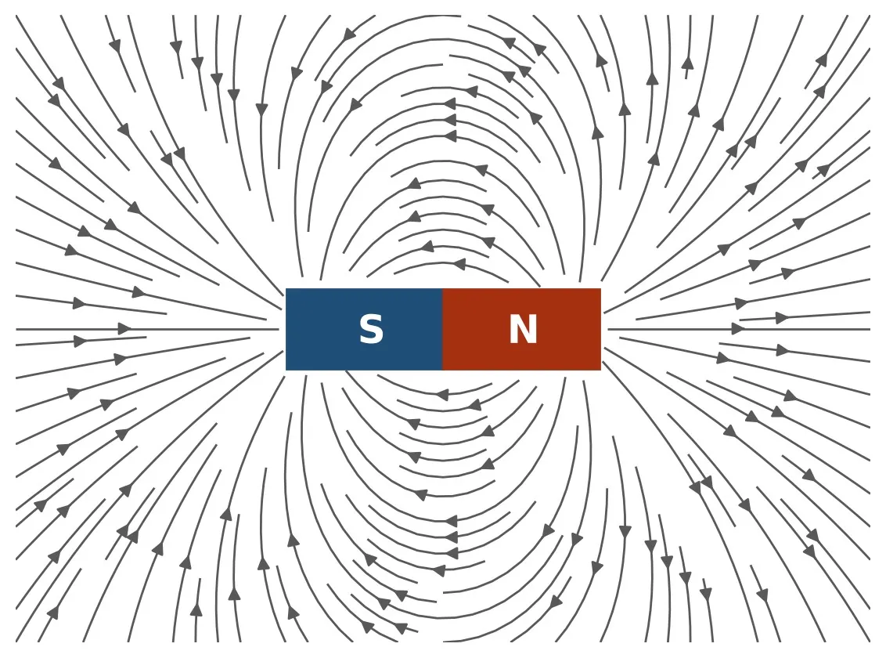
3.4Grandezas vetoriais
Uma grandeza escalar fica definida por um número e uma unidade (massa, tempo, energia, resistência). Uma grandeza vetorial precisa também de direção e sentido (força, velocidade, campo magnético). Os vetores somam-se pela regra do paralelogramo: só se tiverem a mesma direção e sentido é que o módulo da soma é a soma dos módulos. Esta regra será usada nos diagramas vetoriais de corrente alternada.
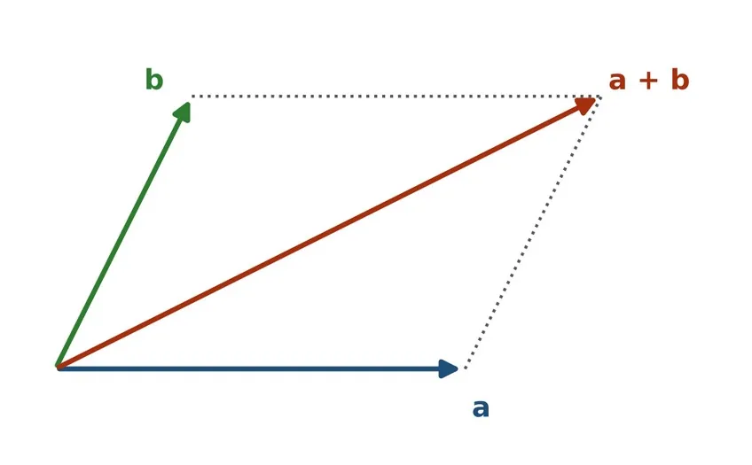
3.5Força de Lorentz
Uma partícula com carga q que se move com velocidade v num campo B fica sujeita a uma força perpendicular a v e a B. θ é o ângulo entre v e B. A força é máxima quando a partícula se move perpendicularmente ao campo e nula quando se move ao longo dele. Está na base do funcionamento dos motores e dos altifalantes.
3.6Experiência de Ørsted e campo de um condutor
Em 1820, Hans Christian Ørsted observou que uma corrente num fio desviava a agulha de uma bússola: a corrente elétrica cria um campo magnético. À volta de um condutor retilíneo, as linhas de força são circunferências em planos perpendiculares ao fio. O sentido dá-se pela regra da mão direita: com o polegar no sentido da corrente, os dedos fechados indicam o sentido das linhas.
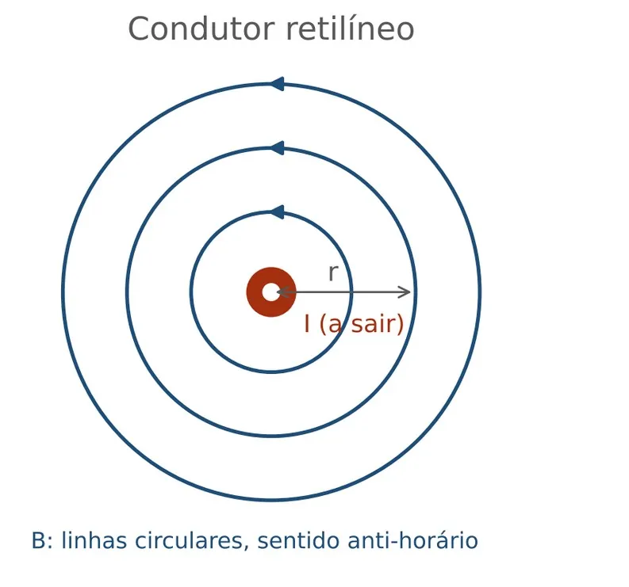
3.7Espira, solenoide e eletroíman
Um solenoide é uma bobina longa de N espiras e comprimento ℓ. No seu interior o campo é praticamente uniforme e o solenoide comporta-se como um íman com polos N e S. Com um núcleo de ferro, o campo aumenta centenas de vezes: obtém-se um eletroíman, cuja grande vantagem é poder ser ligado, desligado e regulado através da corrente (relés, contactores, gruas magnéticas, fechaduras elétricas).
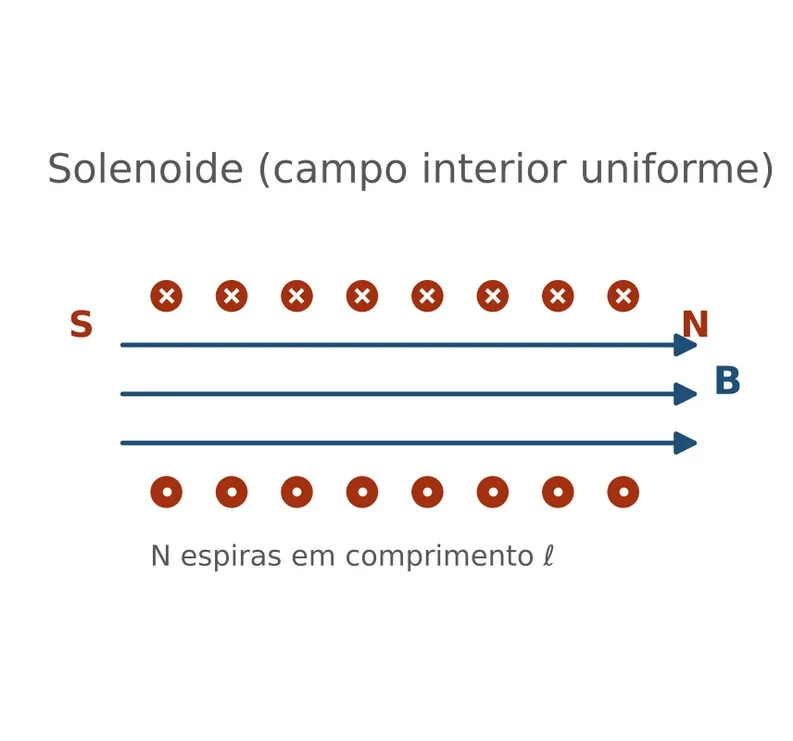
Exemplo resolvido 3.1 a) Fio com I = 10 A: B a 2 cm? b) Espira com r = 5 cm e I = 5 A? c) Solenoide com 500 espiras, ℓ = 25 cm, I = 2 A?
3.8Lei de Laplace
Um condutor de comprimento ℓ, percorrido por uma corrente I num campo B, fica sujeito a uma força – a soma das forças de Lorentz sobre os eletrões que nele se movem. θ é o ângulo entre o condutor e o campo. O sentido dá-se pela regra da mão esquerda: indicador no sentido de B, dedo médio no sentido de I, e o polegar indica F.
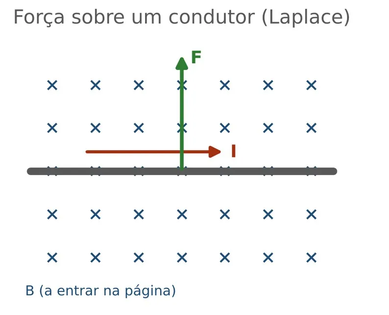
Exemplo resolvido 3.2 Condutor de 0,2 m, I = 8 A, num campo de 0,5 T. Calcule a força a 90° e a 30°.
3.9Espira num campo: o princípio do motor
Numa espira percorrida por corrente dentro de um campo magnético, os dois lados ativos têm correntes de sentidos opostos. As forças de Laplace também têm sentidos opostos e formam um binário que faz rodar a espira. O binário é máximo com o plano da espira paralelo ao campo e nulo quando é perpendicular. Para manter a rotação, um coletor inverte a corrente a cada meia volta: é o princípio do motor elétrico.
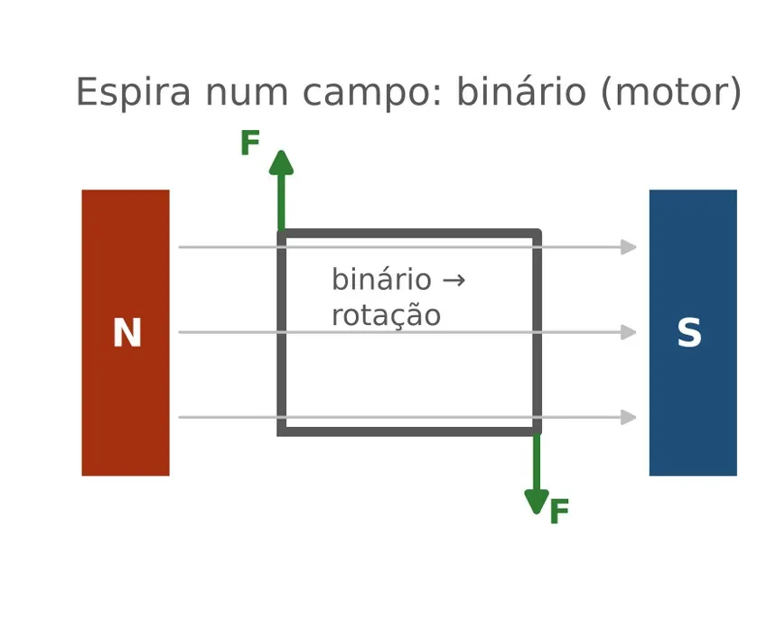
3.10Curva de magnetização
A corrente numa bobina cria uma intensidade de campo H = N · I / ℓ (em A/m). A indução que se obtém no material é B = μ · H, onde μ = μ0 · μr é a permeabilidade. Os materiais ferromagnéticos têm permeabilidade relativa μr de centenas a milhares.
A curva de magnetização (B em função de H) mostra uma zona quase linear, em que B cresce proporcionalmente a H, e uma zona de saturação, em que todos os domínios já estão orientados e B quase não aumenta. Bobinas e transformadores são dimensionados para trabalhar abaixo do «joelho» da curva.
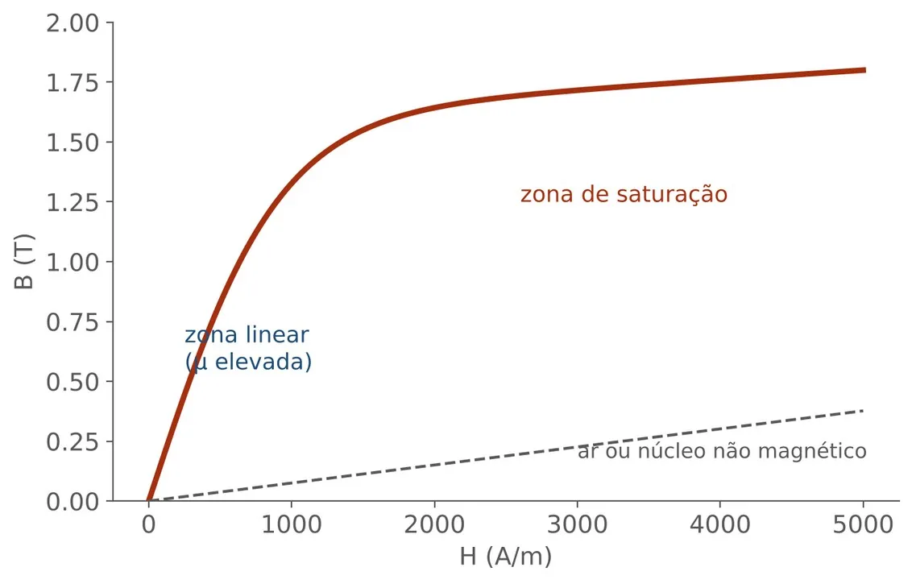
3.11Histerese magnética
Se H variar num ciclo completo (como acontece em corrente alternada), B não segue o mesmo caminho à ida e à volta: é a histerese. O ciclo tem dois pontos característicos: a remanência Br (magnetismo que fica quando H = 0) e o campo coercivo Hc (campo necessário para anular B).
A área do ciclo é a energia transformada em calor em cada ciclo. A 50 Hz, o ciclo repete-se 50 vezes por segundo, por isso os núcleos de transformadores e motores usam materiais de ciclo estreito (ferro macio, aço-silício). Os ímanes permanentes usam materiais de ciclo largo.
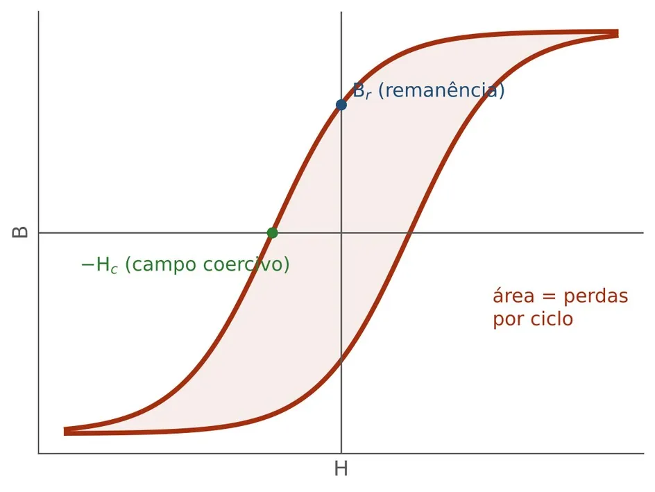
3.12Correntes de Foucault
Um fluxo magnético variável induz correntes em circuito fechado dentro do próprio núcleo metálico: as correntes de Foucault. Aquecem o núcleo e provocam perdas em transformadores, motores e bobinas. Reduzem-se fazendo o núcleo de chapas finas isoladas (laminado), de aço-silício (maior resistividade) ou de ferrite. Têm também aplicações úteis: placas de indução, fornos de indução, travões magnéticos e detetores de metais.
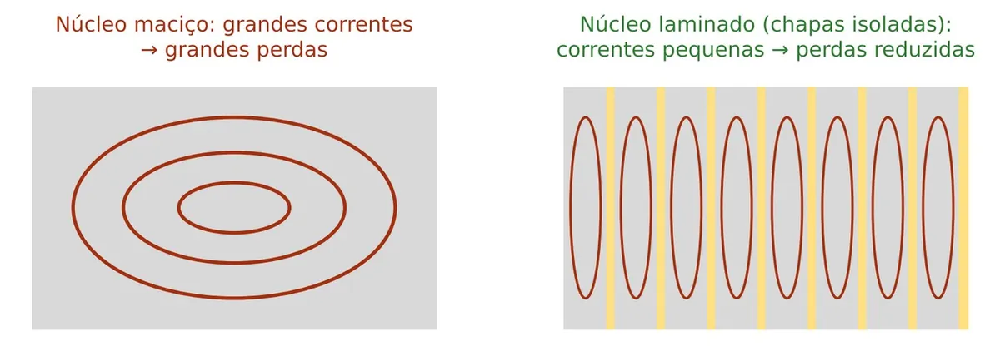
Exercícios
1.Um condutor retilíneo é percorrido por 20 A. Calcule B a 5 cm do condutor.
Ver resolução
2.Um solenoide tem 1000 espiras, 40 cm de comprimento e é percorrido por 0,5 A. Calcule B no interior.
Ver resolução
3.Um condutor de 30 cm, percorrido por 5 A, está perpendicular a um campo de 1,2 T. Calcule a força.
Ver resolução
4.Explique porque é que os núcleos dos transformadores são feitos de chapas isoladas.
Ver resposta
5.Num ciclo de histerese, o que representam Br e Hc? Que tipo de ciclo convém a um transformador?
Ver resposta
Indução eletromagnética
Se a corrente cria um campo magnético, poderá um campo magnético criar corrente? Michael Faraday respondeu que sim em 1831 (Joseph Henry chegou a resultados semelhantes nos EUA). A indução está na base dos geradores e dos transformadores.
4.1A experiência de Faraday
Ligando uma bobina a um galvanómetro (aparelho que deteta correntes muito pequenas e o seu sentido) e movendo um íman junto dela, surge corrente. Só há corrente enquanto o íman se move em relação à bobina: com o íman parado, por mais forte que seja, o galvanómetro marca zero. O sentido da corrente depende do sentido do movimento.
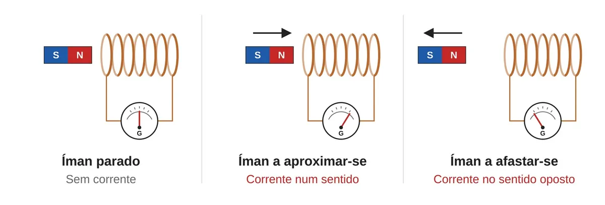
4.2Fluxo magnético
O fluxo magnético Φ mede «quantas linhas de campo» atravessam uma espira. É máximo com a espira perpendicular ao campo (θ = 0°) e nulo com a espira paralela (θ = 90°).
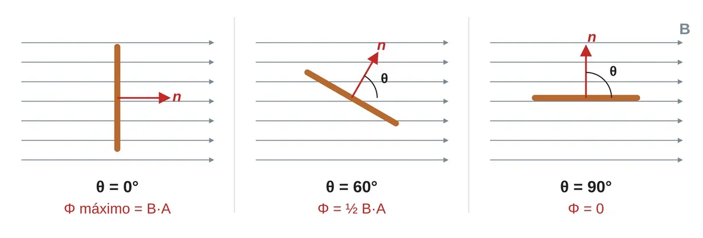
4.3Quando há indução
Há indução sempre que o fluxo magnético através do circuito varia. Isso acontece ao mover o íman ou a bobina, ao rodar a espira no campo (gerador), ao variar a área do circuito ou ao variar a corrente numa bobina vizinha, mesmo sem qualquer movimento (transformador). Com o circuito fechado surge uma corrente induzida; com o circuito aberto há apenas uma f.e.m. (tensão) induzida.
4.4Lei de Faraday
ε é a f.e.m. induzida (V), N o número de espiras, ΔΦ a variação de fluxo (Wb) e Δt o intervalo de tempo (s). A f.e.m. é tanto maior quanto mais intenso for o campo, mais rápida a variação, maior o número de espiras e maior a área. Cada espira contribui com a sua f.e.m. e as f.e.m. somam-se: daí o fator N. Um núcleo de ferro concentra as linhas e aumenta o fluxo.
Exemplo resolvido 4.1 Numa bobina com 200 espiras, o fluxo passa de 0,002 Wb para 0,008 Wb em 0,1 s. Calcule a f.e.m. e a corrente, se R = 4 Ω.
4.5Lei de Lenz
O sentido da corrente induzida é tal que o campo magnético que ela cria se opõe à variação do fluxo que a originou. Ao aproximar o polo norte de um íman, a bobina cria um polo norte na face voltada para ele (repulsão); ao afastá-lo, cria um polo sul (atração). Por isso é preciso fazer força para mover o íman: a energia elétrica obtida vem do trabalho realizado. É esta oposição que o sinal − exprime na lei de Faraday.
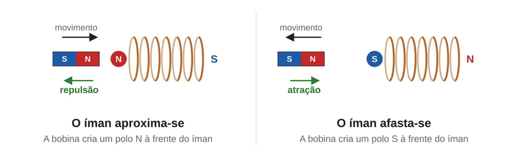
4.6Aplicações
O gerador (alternador)
Uma espira ou bobina roda entre os polos de um íman. O ângulo θ muda continuamente, o fluxo varia e é induzida uma f.e.m. A cada meia volta o sentido inverte-se: obtém-se corrente alternada. O gerador converte energia mecânica em energia elétrica (alternador do automóvel, dínamo de bicicleta, centrais hidroelétricas e eólicas). O estudo detalhado está no capítulo 6.
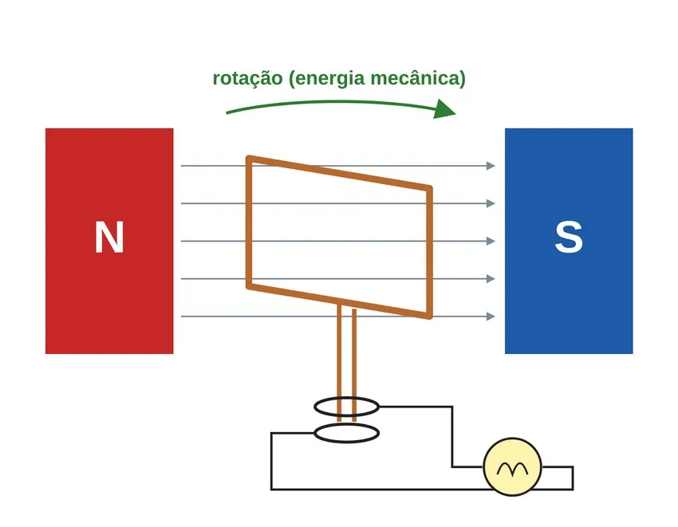
O transformador
A corrente alternada no primário cria um fluxo variável no núcleo de ferro. Esse fluxo atravessa o secundário e induz aí uma tensão, sem qualquer movimento. Com corrente contínua não funciona: sem variação de fluxo não há indução.
Se Ns > Np, a tensão é elevada (transporte de energia); se Ns < Np, é reduzida (por exemplo, de 230 V para 12 V).
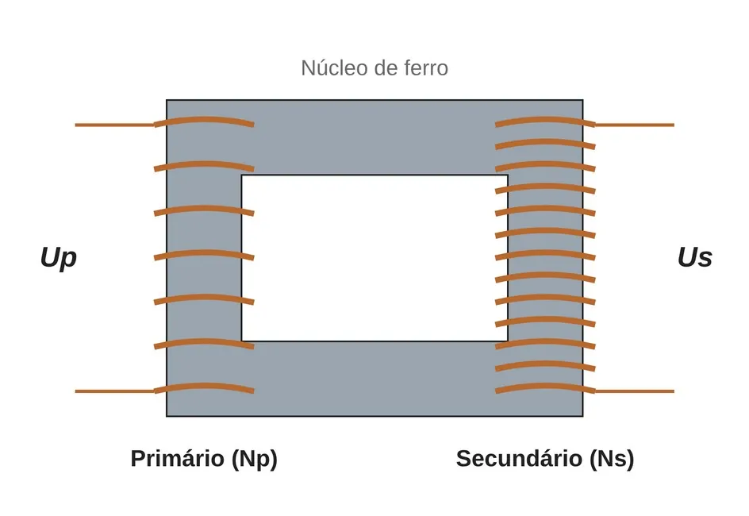
Outras aplicações
- Placa de indução: as correntes induzidas no fundo do tacho aquecem-no.
- Carregador sem fios: a bobina da base induz corrente na bobina do telemóvel.
- Travões magnéticos: correntes induzidas num disco travam comboios e camiões.
- Detetor de metais: o metal altera as correntes induzidas na bobina.
- Guitarra elétrica: a corda vibra junto a um captador (íman e bobina) e induz um sinal.
- Cartões sem contacto: o leitor induz energia na antena do cartão.
4.7Motor ou gerador?
| Gerador | Motor | |
|---|---|---|
| Princípio | Indução (Faraday) | Força eletromagnética (Laplace) |
| Conversão | Energia mecânica → elétrica | Energia elétrica → mecânica |
| Como funciona | O movimento num campo faz variar o fluxo e induz corrente | Uma corrente num campo sofre uma força e entra em movimento |
| Exemplos | Dínamo, alternador, central eólica | Ventoinha, berbequim, comboio elétrico |
Exercícios
1.Um íman está em repouso dentro de uma bobina ligada a um galvanómetro. Há corrente? Justifique.
Ver resposta
2.Uma espira com 0,02 m² está num campo de 0,5 T. Calcule o fluxo para um ângulo entre B e a normal de 0° e de 60°.
Ver resolução
3.Numa bobina de 500 espiras, o fluxo varia 0,004 Wb em 0,05 s. Calcule a f.e.m. e a corrente, sabendo que R = 10 Ω.
Ver resolução
4.Aproxima-se o polo S de um íman de uma bobina. Que polo surge na face voltada para o íman? Há atração ou repulsão?
Ver resposta
5.Porque é que um transformador não funciona com corrente contínua?
Ver resposta
Indutores (bobines)
A bobina armazena energia no campo magnético e opõe-se às variações da corrente. Em CC estabelecida é quase um fio; em CA vai ter uma reatância que cresce com a frequência.
5.1O que é um indutor
Um indutor ou bobina é um componente passivo formado por um fio enrolado, com núcleo de ar, ferro ou ferrite, que armazena energia no campo magnético quando é percorrido por corrente. Também se designa por «choke».
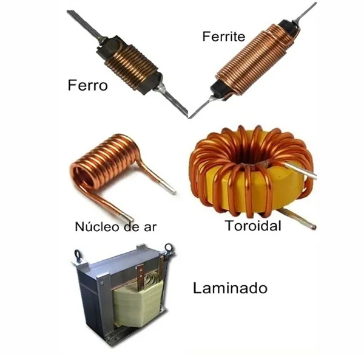
5.2Autoindução e indutância
Quando a corrente numa bobina varia, o campo magnético que ela cria também varia e induz na própria bobina uma f.e.m. que, pela lei de Lenz, se opõe a essa variação. É a autoindução. A bobina funciona como um «travão» às variações da corrente – não à corrente em si: em corrente contínua estabelecida comporta-se como um simples fio, com a resistência do cobre.
A propriedade de se opor às variações da corrente chama-se indutância (L) e mede-se em henry (H), em homenagem a Joseph Henry. Como o henry é uma unidade grande para a eletrónica, usam-se o milihenry (mH) e o microhenry (μH). A segunda fórmula dá a energia armazenada no campo magnético.
Simulação de apoio dos slides: circuito simples com indutor (Tinkercad)
5.3Tipos de núcleo
| Núcleo | Características | Aplicação típica |
|---|---|---|
| Ar | Sem material ferromagnético; baixa indutância; sem perdas no núcleo | Alta frequência (rádio) |
| Ferromagnético | Concentra o campo e aumenta L; tem perdas (histerese e Foucault) que crescem com f | Quando é preciso indutância elevada |
| Laminado (aço-silício) | Chapas isoladas com verniz reduzem as correntes de Foucault | Baixa frequência (50 Hz): transformadores, bobinas de potência |
| Ferrite | Cerâmico ferromagnético de resistividade elevada: perdas muito baixas | Alta frequência: fontes comutadas, filtros |
| Toroidal | Forma de anel; o campo fecha-se no núcleo, com pouca dispersão | Fontes de alimentação e filtros em CA |
Os indutores usam-se em solenoides, relés, transformadores, sensores indutivos, filtros e fontes de alimentação.
5.4Associação de bobines
Desde que não haja acoplamento magnético entre as bobines, associam-se como as resistências:
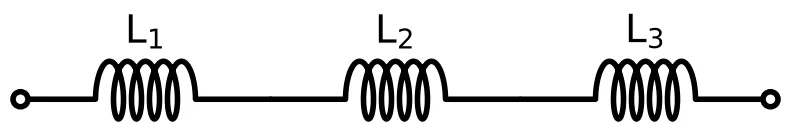
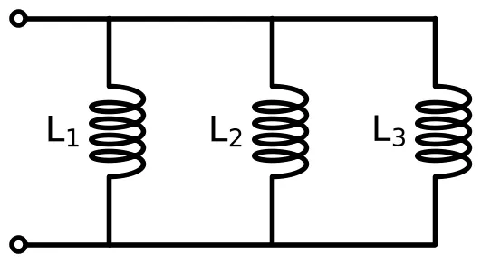
Exemplo resolvido 5.1 a) Três bobines de 400 μH em série. b) Três bobines de 300 μH em paralelo. c) 10 mH em paralelo com 15 mH.
Exercícios
1.Duas bobines de 20 mH e 30 mH estão em série. Qual é a indutância equivalente? E em paralelo?
Ver resolução
2.Explique porque é que uma bobina não se opõe à corrente contínua estabelecida.
Ver resposta
3.Porque é que os núcleos de ferrite se usam em alta frequência e os laminados em 50 Hz?
Ver resposta
4.Uma bobina de 0,5 H é percorrida por 2 A. Que energia armazena no campo magnético?
Ver resolução
Teste rápido – Corrente contínua
Doze perguntas sobre os capítulos 1 a 5. Escolha uma opção: vê logo se acertou e porquê. A pontuação fica neste dispositivo.
Corrente alternada sinusoidal
A corrente da rede muda de sentido 100 vezes por segundo. Este capítulo define as grandezas que a descrevem e mostra como se medem no osciloscópio.
6.1Porquê corrente alternada
Em 1832, Hippolyte Pixii construiu o primeiro gerador de corrente alternada, aplicando a indução de Faraday. Nos anos 1880 travou-se a «guerra das correntes»: Edison defendia a corrente contínua; Westinghouse e Tesla, o sistema polifásico de corrente alternada. Em 1895–1896, a central das cataratas do Niágara passou a alimentar a cidade de Buffalo, a cerca de 40 km, em CA.
A corrente alternada venceu porque a sua tensão se eleva e baixa facilmente com transformadores. Como as perdas nas linhas são P = R · I², transportar a mesma potência a uma tensão mais alta exige menos corrente e perde-se muito menos energia.
| Para transportar 100 kW | Corrente (I = P / U) | Perdas numa linha de 1 Ω |
|---|---|---|
| a 100 V | 1000 A | 1 × 1000² = 1 000 000 W (impossível) |
| a 100 kV | 1 A | 1 × 1² = 1 W |
Em Portugal, a rede de distribuição é de 230 V / 400 V e 50 Hz.
6.2Corrente contínua, alternada e formas de onda
Na corrente contínua o sentido e o valor são constantes (pilhas, baterias, painéis fotovoltaicos, fontes retificadas). Na corrente alternada o sentido muda periodicamente: a 50 Hz, a corrente inverte o sentido 100 vezes por segundo. A forma de onda da rede é sinusoidal, a que um alternador produz naturalmente; em eletrónica encontram-se também ondas quadradas, triangulares e em dente de serra.
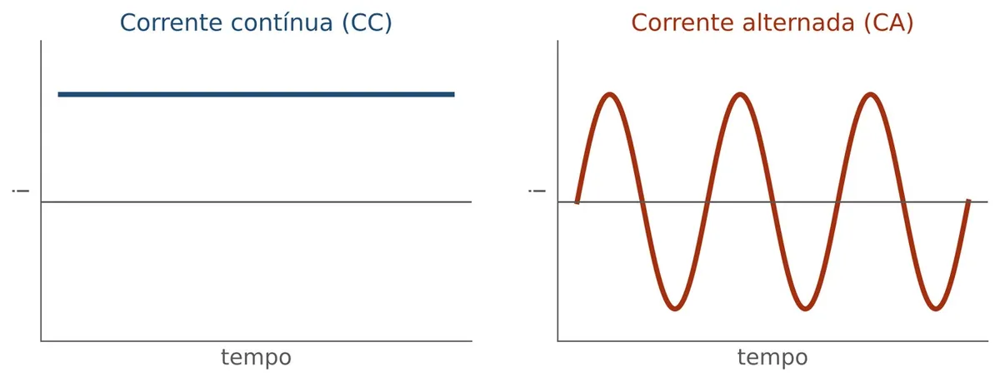
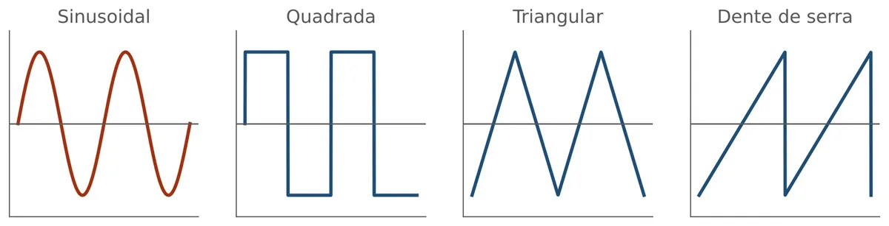
6.3Produção: o alternador
No alternador elementar, uma espira (o induzido) roda com velocidade angular ω num campo magnético. As extremidades estão ligadas a dois anéis coletores, em contacto com escovas de grafite que levam a corrente ao circuito exterior. O fluxo através da espira varia continuamente, Φ = B · A · cos(ωt), e pela lei de Faraday surge uma f.e.m. sinusoidal:
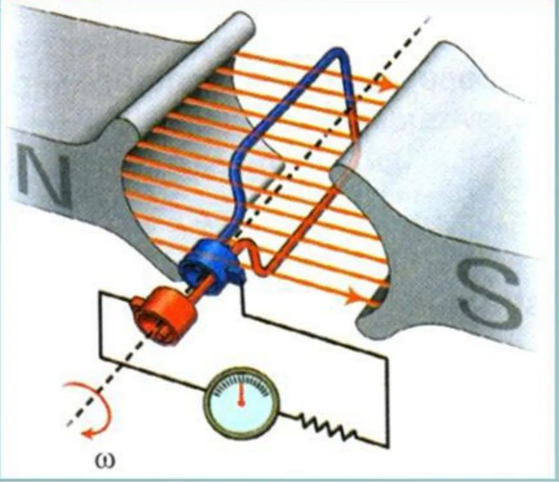
A f.e.m. não depende de quanto fluxo atravessa a espira, mas de quão depressa ele varia. A 0° (plano da espira perpendicular ao campo) o fluxo é máximo mas está a variar pouco: e = 0. A 90° (plano paralelo ao campo) o fluxo é nulo mas varia mais depressa: e é máxima. Entre 180° e 360° repete-se com sentido contrário. Uma volta completa corresponde a um ciclo.
6.4Período, frequência e pulsação
- Período (T): tempo de um ciclo completo, em segundos (s).
- Frequência (f): número de ciclos por segundo, em hertz (Hz).
- Pulsação ou velocidade angular (ω): em radianos por segundo (rad/s).
- Rede europeia: f = 50 Hz → T = 20 ms e ω = 314 rad/s. Nas Américas usa-se muitas vezes 60 Hz.
6.5Amplitude e valor instantâneo
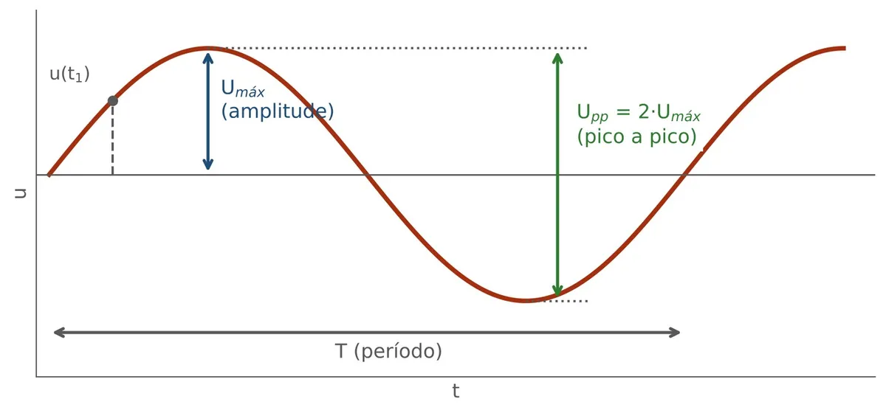
6.6Valor médio e valor eficaz
Num período completo, o valor médio de uma sinusoide é zero (as duas alternâncias anulam-se). Por isso calcula-se numa alternância (meio período); é o valor que interessa na retificação.
O valor eficaz (r.m.s.) é o valor de uma corrente contínua que produziria o mesmo calor na mesma resistência. Os valores indicados nos aparelhos e na rede (230 V, 5 A) são sempre valores eficazes, e é o que medem os multímetros.
Exemplo resolvido 6.1 Rede de 230 V (eficaz) e 50 Hz: período, amplitude, pico a pico, valor médio e valor em t = 2,5 ms.
Exemplo resolvido 6.2 Uma lâmpada absorve uma corrente com amplitude 1,29 A e período 16,7 ms. Frequência, valor eficaz e valor médio?
6.7Fase, fasores e desfasamento
Uma grandeza sinusoidal pode representar-se por um fasor: um vetor que roda a ω rad/s, com comprimento igual ao valor máximo (ou eficaz) e ângulo igual à fase. A sua projeção vertical dá o valor instantâneo. Com fasores, somar sinusoides da mesma frequência passa a ser somar vetores. Nos diagramas vetoriais desenham-se os fasores parados em t = 0, com os valores eficazes.
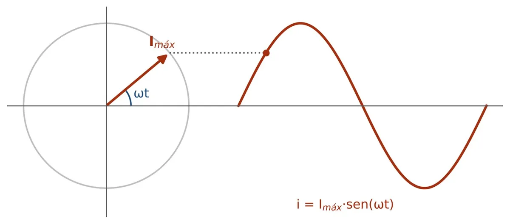
Duas grandezas com a mesma frequência podem estar desfasadas: uma atinge o máximo antes da outra. O desfasamento φ calcula-se a partir do atraso Δt entre elas. Diz-se que a corrente está em atraso (ou em avanço) de φ em relação à tensão. Com φ = 0° estão em fase; com φ = 90°, em quadratura.
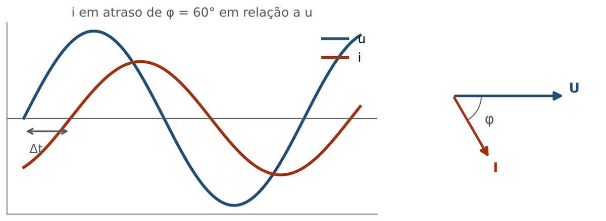
6.8O osciloscópio
O osciloscópio mostra a forma de onda de uma tensão em função do tempo. O ecrã está dividido numa grelha (normalmente 10 × 8 divisões):
- Eixo vertical: sensibilidade em volts por divisão (V/div), escolhida em cada canal.
- Eixo horizontal: base de tempo, em s/div, ms/div ou μs/div.
- Trigger (disparo): sincroniza o varrimento com o sinal e estabiliza a imagem.
- Acoplamento: DC (sinal completo) ou AC (retira a componente contínua).
- Dois canais (CH1, CH2) permitem comparar sinais e medir desfasamentos.
- As pontas ×10 devem ser compensadas com o sinal de calibração do aparelho.
Exemplo resolvido 6.3 O sinal ocupa 6 divisões de pico a pico (5 V/div) e um ciclo ocupa 4 divisões (5 ms/div). Determine Upp, Umáx, U, T e f.
Exemplo resolvido 6.4 Dois sinais com período de 4 divisões; a passagem por zero de i está 0,5 divisão depois da de u. Desfasamento?
Exercícios
1.Numa rede de 120 V e 60 Hz, calcule o período e a amplitude da tensão.
Ver resolução
2.Uma corrente é dada por i = 100 · sen(314t) mA. Indique Imáx, o valor eficaz, a frequência e o valor médio numa alternância.
Ver resolução
3.No osciloscópio (2 V/div; 2 ms/div), um sinal ocupa 4 div de pico a pico e um ciclo ocupa 5 div. Calcule Upp, U, T e f.
Ver resolução
4.Dois sinais com período de 5 div estão desfasados de 1 div. Calcule φ.
Ver resolução
5.Porque se diz que a tomada tem 230 V, se a tensão chega a mais de 300 V?
Ver resposta
Circuitos R, L e C em corrente alternada
Em CA, a resistência comporta-se como em CC, mas a bobina e o condensador passam a ter uma oposição que depende da frequência: a reatância.
7.1Esquemas elétricos e simbologia
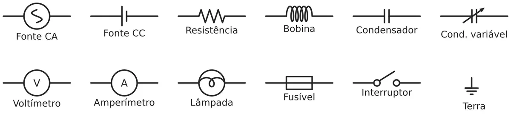
| Tipo de esquema | Para que serve |
|---|---|
| Esquema de princípio (funcional) | Mostra como o circuito funciona, sem a disposição real dos componentes |
| Esquema unifilar | Representa cada circuito por um só traço; usado em instalações elétricas |
| Esquema multifilar | Representa todos os condutores (fase, neutro, terra) |
| Esquema de ligações (cablagem) | Mostra onde se liga cada fio, para montagem e reparação |
7.2Impedância e Lei de Ohm generalizada
Em corrente alternada, a oposição total à corrente chama-se impedância (Z) e mede-se em ohm. Resulta das resistências (R) e das reatâncias: indutiva (XL) e capacitiva (XC). As reatâncias dependem da frequência; a resistência não. R e X não se somam aritmeticamente, mas vetorialmente, e entre a tensão e a corrente aparece um desfasamento φ.
7.3Circuito puramente resistivo
A resistência comporta-se como em corrente contínua: I = U / R, usando valores eficazes. A tensão e a corrente estão em fase (φ = 0°): anulam-se e atingem o máximo ao mesmo tempo. Toda a energia é convertida em calor: P = R · I² = U · I.
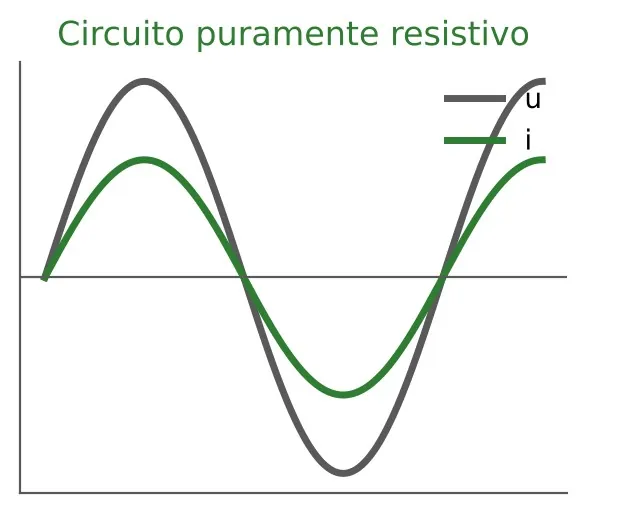
Exemplo resolvido 7.1 Uma resistência de 200 Ω é ligada a 24 V em CC e depois a 24 V (eficaz) em CA. Calcule I, P e a energia em 5 h.
Exemplo resolvido 7.2 Dois recetores caloríficos de 500 W e 750 W em paralelo a 230 V / 50 Hz: correntes, resistências e energia em 3 h.
7.4Circuito puramente indutivo
Numa bobina ideal (R = 0), a oposição à corrente é a reatância indutiva XL, que aumenta com a frequência. Em CC (f = 0), XL = 0. A corrente fica em atraso de 90° em relação à tensão. A bobina não consome energia ativa: armazena-a no campo magnético num quarto de período e devolve-a no seguinte (P = 0).
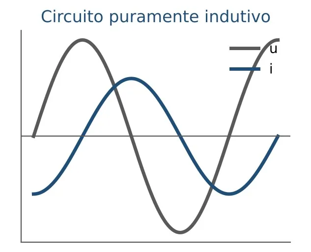
Exemplo resolvido 7.3 Bobina pura com L = 0,7 H ligada a 110 V, 50 Hz: XL, I, potência ativa, U · I e energia máxima.
7.5Circuito puramente capacitivo
Num condensador ideal, a oposição à corrente é a reatância capacitiva XC, que diminui com a frequência. Em CC (f = 0), XC é infinita: depois de carregado, o condensador é um circuito aberto. A corrente fica em avanço de 90° em relação à tensão. Também não consome energia ativa: armazena-a no campo elétrico e devolve-a (P = 0).
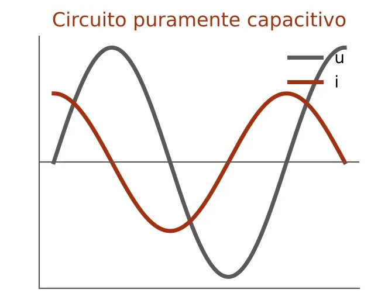
Exemplo resolvido 7.4 Condensador de 8 μF ligado a 230 V, 50 Hz: XC, I, potência ativa, desfasamento e energia máxima.
7.6Resumo
| Resistência | Bobina | Condensador | |
|---|---|---|---|
| Oposição | R | XL = 2πfL | XC = 1/(2πfC) |
| Se f aumenta | não muda | XL aumenta | XC diminui |
| Corrente em relação à tensão | em fase (0°) | atraso de 90° | avanço de 90° |
| Em CC | igual | curto-circuito (só R do fio) | circuito aberto |
| Energia | transforma em calor | armazena no campo magnético | armazena no campo elétrico |
Exercícios
1.Uma bobina pura de 0,2 H está ligada a 230 V, 50 Hz. Calcule XL e I. Quanto vale XL a 1 kHz?
Ver resolução
2.Um condensador de 22 μF está ligado a 230 V, 50 Hz. Calcule XC e I.
Ver resolução
3.Explique porque é que um condensador «bloqueia» a CC e deixa passar a CA.
Ver resposta
4.Um aquecedor de 2 kW funciona a 230 V. Calcule a corrente e a resistência.
Ver resolução
Circuitos RLC série e paralelo
Juntando R, L e C, as tensões (em série) ou as correntes (em paralelo) somam-se como vetores. O diagrama vetorial é a ferramenta principal.
8.1Circuito RLC série
No circuito série, a corrente I é a mesma em todos os elementos e serve de referência do diagrama vetorial. Cada elemento tem a sua tensão: UR = R · I, em fase com I; UL = XL · I, 90° à frente; UC = XC · I, 90° atrás. UL e UC são opostas e subtraem-se. A tensão total é a soma vetorial:
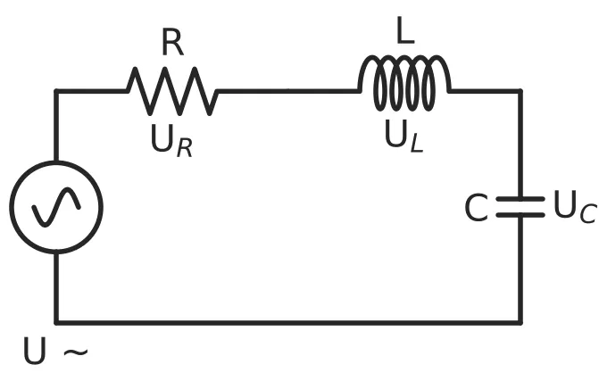
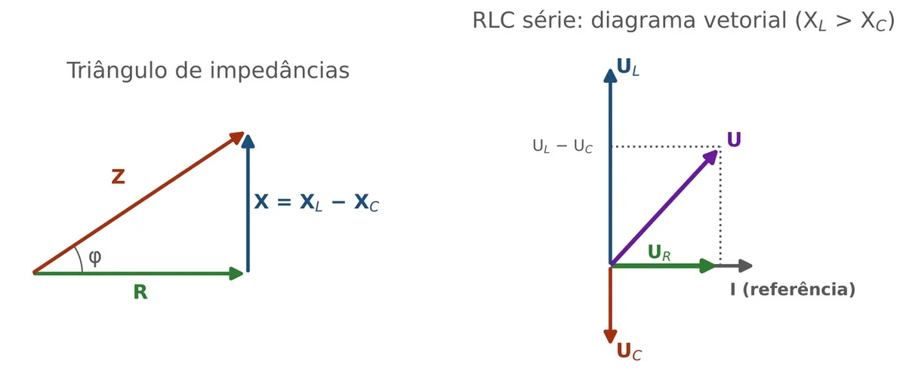
- XL > XC: circuito indutivo; a corrente está em atraso (φ > 0).
- XL < XC: circuito capacitivo; a corrente está em avanço (φ < 0).
- XL = XC: Z = R e φ = 0 – ressonância (capítulo 9).
8.2Procedimento de análise
- Desenhar o esquema e registar os dados (U, f, R, L, C).
- Calcular as reatâncias: XL = 2πfL e XC = 1/(2πfC).
- Calcular a impedância: Z = √(R² + (XL − XC)²).
- Calcular a corrente: I = U / Z.
- Calcular as tensões parciais: UR = R·I, UL = XL·I e UC = XC·I.
- Calcular φ e cos φ = R / Z e dizer se o circuito é indutivo ou capacitivo.
- Verificar: desenhar o diagrama vetorial e confirmar que U = √(UR² + (UL − UC)²).
Exemplo resolvido 8.1 R = 40 Ω, L = 0,3 H e C = 100 μF em série, a 230 V / 50 Hz.
8.3Casos particulares: RL e RC série
| Circuito | Impedância | Desfasamento | Exemplos |
|---|---|---|---|
| RL série | Z = √(R² + XL²) | I em atraso (0° < φ < 90°) | motores, balastros, bobinas reais |
| RC série | Z = √(R² + XC²) | I em avanço (−90° < φ < 0°) | filtros, temporizadores, acoplamento |
Uma bobina real tem sempre a resistência do fio e comporta-se como um circuito RL série. O mesmo acontece com um motor: tem uma parte resistiva (trabalho útil e perdas) e uma parte indutiva (campo magnético). No simulador, ponha C = 0 para obter um RL, ou L = 0 para um RC.
8.4Circuito RLC paralelo
No circuito paralelo, a tensão U é a mesma em todos os ramos e serve de referência. As correntes são IR = U/R (em fase), IL = U/XL (atraso de 90°) e IC = U/XC (avanço de 90°). IL e IC são opostas e subtraem-se:
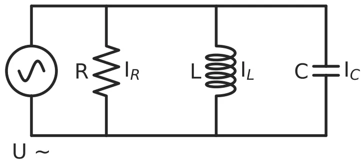
Exemplo resolvido 8.2 R = 100 Ω, L = 0,5 H e C = 40 μF em paralelo, a 230 V / 50 Hz.
Exercícios
1.R = 30 Ω, L = 0,2 H e C = 100 μF em série, a 230 V / 50 Hz. Calcule XL, XC, Z, I, as tensões parciais e cos φ. É indutivo ou capacitivo?
Ver resolução
2.Uma bobina real tem R = 60 Ω e XL = 80 Ω e está ligada a 100 V. Calcule Z, I, UR, UL e cos φ.
Ver resolução
3.R = 50 Ω, XL = 100 Ω e XC = 50 Ω em paralelo, a 100 V. Calcule IR, IL, IC, I e Z.
Ver resolução
4.Num RLC série, como se explica que UC possa ser maior do que a tensão da fonte?
Ver resposta
Ressonância
Como XL aumenta e XC diminui com a frequência, há uma frequência f0 em que XL = XC e as reatâncias se anulam.
9.1O fenómeno
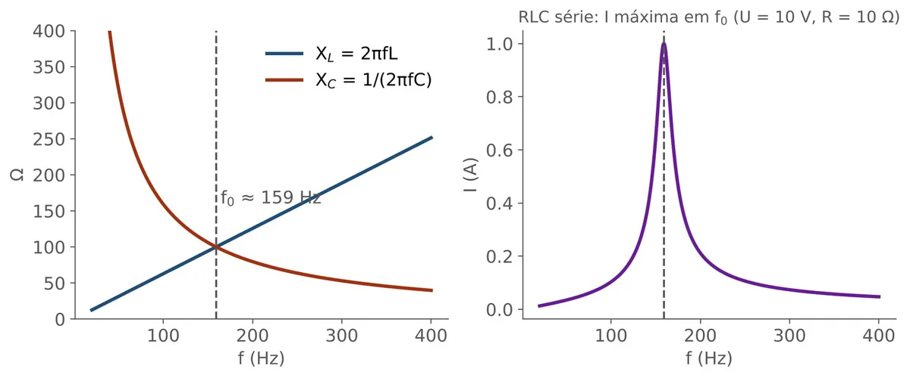
No circuito série em ressonância, Z = R (mínima), a corrente é máxima e a tensão e a corrente ficam em fase.
9.2Ressonância série e paralelo
| Em f0 | RLC série | RLC paralelo |
|---|---|---|
| Impedância | mínima: Z = R | máxima |
| Corrente da fonte | máxima: I = U / R | mínima |
| Fator de potência | cos φ = 1 | cos φ = 1 |
| Cuidado | UL e UC podem ser muito maiores do que U (sobretensões) | IL e IC podem ser muito maiores do que I (sobrecorrentes) |
| Uso típico | selecionar uma frequência (deixa passar) | rejeitar uma frequência (bloqueia) |
Exemplo resolvido 9.1 RLC série com R = 10 Ω, L = 0,1 H e C = 10 μF, alimentado por 10 V: f0, corrente e tensão na bobina.
9.3Aplicações
- Filtros: deixam passar ou bloqueiam uma banda de frequências (áudio, fontes, harmónicos).
- Osciladores: geram sinais de frequência estável (relógios, emissores).
- Antenas e transmissão: na sintonia de rádio e televisão, o circuito LC escolhe a estação.
- Sistemas de potência: as baterias de condensadores podem entrar em ressonância com harmónicos da rede – um risco a evitar.
- Equipamentos de medição: medidores de frequência, pontes de impedância, detetores de metais.
- Inversores: conversores ressonantes de alto rendimento e aquecimento por indução.
- Imagiologia médica: a ressonância magnética usa bobinas sintonizadas para emitir e captar sinais.
Exercícios
1.Calcule a frequência de ressonância de um circuito com L = 50 mH e C = 2 μF.
Ver resolução
2.Num RLC série em ressonância, quanto vale a impedância? E o fator de potência?
Ver resposta
3.Porque é que, em ressonância série, a tensão no condensador pode ultrapassar a da fonte?
Ver resposta
4.Dê dois exemplos de equipamentos que usam ressonância.
Ver resposta
Potências e fator de potência
Com desfasamento, parte da corrente não produz trabalho: vai e volta entre a rede e as bobinas ou condensadores. Compensar o fator de potência é reduzir essa parte.
10.1Potências em corrente alternada
Em corrente contínua, P = U · I. Em corrente alternada isso só é verdade quando a tensão e a corrente estão em fase. Distinguem-se três potências:
| Potência | Fórmula | Unidade | Significado |
|---|---|---|---|
| Ativa (P) | P = U · I · cos φ | watt (W) | transformada em trabalho e calor |
| Reativa (Q) | Q = U · I · sen φ | volt-ampere reativo (var) | trocada com os campos de L e C |
| Aparente (S) | S = U · I | volt-ampere (VA) | dimensiona cabos, transformadores e geradores |
Exemplo resolvido 10.1 Um motor a 230 V absorve 10 A com cos φ = 0,8 (sen φ = 0,6). Calcule S, P e Q.
10.2Potência por tipo de carga
| Carga | φ | P | Q |
|---|---|---|---|
| Resistiva (aquecedor, lâmpada incandescente) | 0° | U · I | 0 |
| Indutiva (motor, transformador, balastro) | 0° a 90° | U · I · cos φ | positiva (absorve) |
| Capacitiva (condensador) | 0° a −90° | ≈ 0 | negativa (fornece) |
A lei de Joule aplica-se em CA com a corrente eficaz: P = R · I². As perdas nas linhas dependem da corrente total, incluindo a parte reativa. Os contadores registam a energia ativa (kWh) e, em instalações maiores, a energia reativa (kvarh), que pode ser faturada.
10.3Soma de potências (teorema de Boucherot)
Numa instalação com várias cargas somam-se as potências ativas e as potências reativas, mas nunca as aparentes: PT = ΣP; QT = ΣQ; ST = √(PT² + QT²).
10.4Fator de potência
O fator de potência cos φ = P / S indica que parte da potência aparente é útil; varia entre 0 e 1. Motores, transformadores e iluminação fluorescente com balastro têm cos φ baixo. Para a mesma potência útil, cos φ baixo significa corrente maior: I = P / (U · cos φ). Daí resultam:
- mais perdas por efeito Joule nos cabos e transformadores;
- maiores quedas de tensão;
- cabos, aparelhagem e transformadores sobredimensionados;
- custo da energia reativa nas instalações em que é faturada.
Por exemplo, 5 kW a 230 V exigem 31,1 A com cos φ = 0,7, mas apenas 22,9 A com cos φ = 0,95. Compensar é aproximar cos φ de 1, normalmente para 0,95 ou mais.
10.5Compensação com condensadores
Ligam-se condensadores em paralelo com a carga. Os condensadores fornecem a energia reativa que a carga pede, de modo que a rede deixa de a ter de transportar. A potência ativa mantém-se; Q e S diminuem; a corrente na linha baixa.
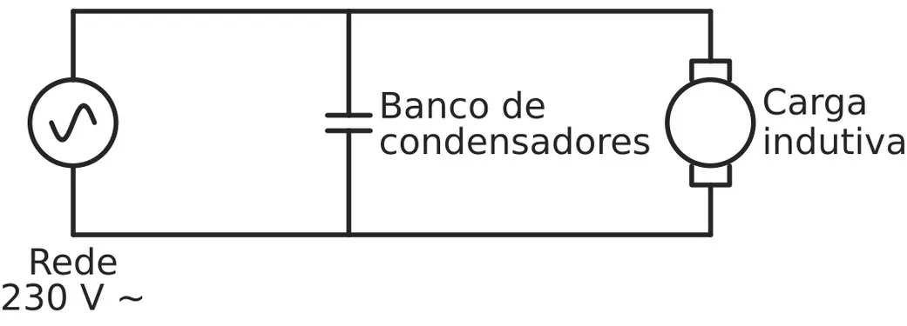
Exemplo resolvido 10.2 Um motor absorve 5 kW a 230 V / 50 Hz com cos φ = 0,7. Pretende-se cos φ = 0,95. Calcule QC, C e as correntes.
10.6Bancos de condensadores
- Compensação individual: um condensador junto de cada motor ou luminária.
- Por grupo: um banco por quadro parcial.
- Global: um banco no quadro geral.
- Fixa: para cargas constantes.
- Automática: um regulador de fator de potência liga e desliga escalões consoante a carga, evitando sobrecompensar.
Para ajustar a configuração: medir P, Q e cos φ com um analisador de energia; calcular QC e escolher os escalões; programar o cos φ pretendido no regulador; confirmar que não há sobrecompensação (cos φ capacitivo). Os condensadores ficam carregados depois de desligados: devem ter resistências de descarga e respeitar-se o procedimento da secção 2.6.
Exercícios
1.Uma carga absorve 400 VA com cos φ = 0,75. Calcule P e Q.
Ver resolução
2.Uma oficina tem P = 10 kW a 230 V / 50 Hz com cos φ = 0,75. Calcule QC e C para obter cos φ = 0,95, e as correntes antes e depois.
Ver resolução
3.Uma instalação tem aquecimento de 3 kW (cos φ = 1) e motores de 4 kW (cos φ = 0,8). Calcule PT, QT, ST e cos φT.
Ver resolução
4.Porque é que a compensação se faz com condensadores em paralelo e não em série?
Ver resposta
Sistemas trifásicos
Toda a produção e o transporte de energia são trifásicos. A rede portuguesa é 230/400 V: 230 V entre fase e neutro, 400 V entre fases.
11.1Monofásico e trifásico
O sistema monofásico usa uma fase e o neutro (230 V) e serve habitações e pequenas cargas. O sistema trifásico usa três fases (L1, L2, L3), com ou sem neutro, e tem 400 V entre fases. Para a mesma potência, o trifásico usa menos cobre e tem menores perdas; os motores trifásicos arrancam sozinhos, são mais simples e têm binário mais regular.
11.2Produção das tensões trifásicas
O alternador trifásico tem três enrolamentos desfasados de 120° no estator. Produz três tensões iguais, desfasadas de 120° (um terço de período). Em cada instante, a soma das três tensões é zero.
11.3Tensões simples e compostas
- Tensão simples (V): entre uma fase e o neutro – 230 V.
- Tensão composta (U): entre duas fases – 400 V.
- √3 × 230 = 398,4 V ≈ 400 V; por isso a rede portuguesa se designa «230/400 V».
11.4Ligação em estrela e em triângulo
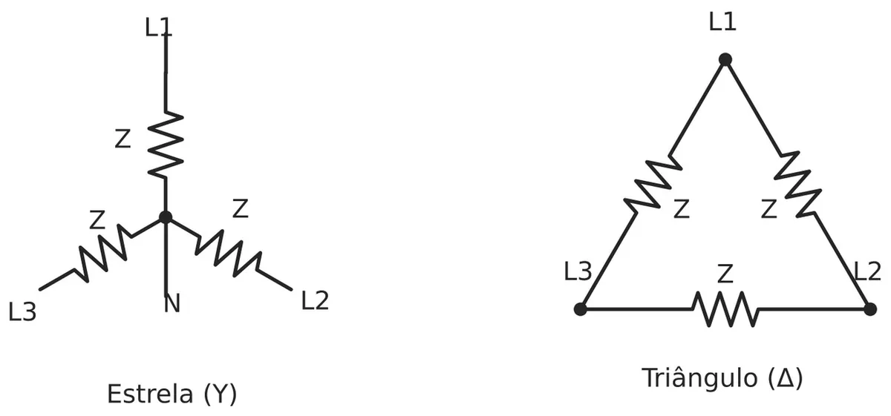
| Estrela (Y) | Triângulo (Δ) | |
|---|---|---|
| Tensão em cada carga | V = U / √3 | U |
| Corrente de linha | IL = Ifase | IL = √3 · Ifase |
| Neutro | pode ter | não tem |
11.5Cargas equilibradas e desequilibradas
Numa carga equilibrada, as três fases têm impedâncias iguais (por exemplo, um motor trifásico): as correntes são iguais e desfasadas de 120°, e em estrela a corrente no neutro é zero. Numa carga desequilibrada (por exemplo, habitações ligadas a fases diferentes), as correntes são diferentes e circula corrente no neutro.
11.6Potências em trifásico
Exemplo resolvido 11.1 Três resistências de 46 Ω em estrela na rede 230/400 V: corrente, potência e corrente no neutro.
Exemplo resolvido 11.2 Um motor trifásico de 400 V absorve 10 A com cos φ = 0,85. Calcule P, Q e S.
Exercícios
1.Numa rede trifásica com tensão composta de 400 V, qual é a tensão simples?
Ver resolução
2.Um motor trifásico absorve 16 A a 400 V com cos φ = 0,8. Calcule P, Q e S.
Ver resolução
3.Três resistências de 23 Ω estão ligadas em estrela na rede 230/400 V. Calcule a corrente de fase, a potência total e a corrente no neutro.
Ver resolução
4.Qual é a corrente no neutro se uma das resistências do exercício anterior for desligada?
Ver resolução
Laboratório
As duas fichas avaliam os critérios de desempenho «efetuando a análise de ondas com osciloscópio» e «ajustando a configuração para compensação do fator de potência». Cada ficha tem a versão do formando e as notas do professor.
Análise de ondas com o osciloscópio
Material: osciloscópio de 2 canais, gerador de funções, multímetro, resistência de 1 kΩ e condensador de 100 nF.
- Parte A: medir Upp, Umáx, U eficaz e T a 50, 500 e 1000 Hz, e comparar com o multímetro.
- Parte B: sinais sinusoidal, quadrado e triangular com o mesmo Upp: o valor eficaz muda com a forma de onda.
- Parte C: medir o desfasamento num circuito RC a 500, 1000 e 2000 Hz. Prever o ângulo antes de medir.
Treino prévio: osciloscópio virtual do capítulo 6.
Compensação do fator de potência
Material: bancada com diferencial de 30 mA, carga indutiva (luminária fluorescente de 36 W com balastro ferromagnético), analisador de energia e condensadores de 2, 4,5 e 8 μF.
- Parte A: medir P, I e cos φ da carga sem compensação.
- Parte B: calcular QC e a capacidade C necessária.
- Parte C: ensaiar os escalões de 0 a 8 μF e escolher o que dá cos φ ≥ 0,95 sem sobrecompensar.
Treino prévio: calculadora de compensação do capítulo 10.
Vídeos de apoio
Vídeos curtos para rever os conceitos em casa, organizados pelos capítulos da sebenta. Os vídeos abrem no YouTube, numa janela nova. Os vídeos marcados com EN estão em inglês; ative as legendas automáticas em português se precisar.
Formulário
Todas as fórmulas da UC numa página.
| Tema | Fórmulas |
|---|---|
| Corrente contínua | I = Q/t · U = R·I · R = ρL/S · P = U·I = R·I² = U²/R · W = P·t |
| Associações | Série: Req = ΣR; Leq = ΣL; 1/CT = Σ1/C Paralelo: 1/Req = Σ1/R; 1/Leq = Σ1/L; CT = ΣC |
| Condensadores | C = Q/U · C = εA/d · W = ½CU² · τ = R·C |
| Magnetismo | F = |q|vB sen θ · B = μ0 I/(2πr) · B = μ0 I/(2r) · B = μ0 N I/ℓ · F = B I ℓ sen θ · H = NI/ℓ · B = μH |
| Indução | Φ = B·A·cos θ · ε = −N·ΔΦ/Δt · e = −L·ΔI/Δt · W = ½LI² · Us/Up = Ns/Np |
| Grandezas CA | f = 1/T · ω = 2πf · u = Umáx·sen(ωt + φ) · U = Umáx/√2 · Uméd = (2/π)Umáx · φ = 360°·Δt/T |
| Reatâncias | XL = 2πfL · XC = 1/(2πfC) · U = Z·I |
| RLC série | Z = √(R² + (XL − XC)²) · cos φ = R/Z · U = √(UR² + (UL − UC)²) |
| RLC paralelo | I = √(IR² + (IC − IL)²) · Z = U/I · cos φ = IR/I |
| Ressonância | f0 = 1/(2π√(LC)) |
| Potências | P = UI cos φ · Q = UI sen φ · S = UI · S² = P² + Q² |
| Compensação | QC = P(tg φ1 − tg φ2) · C = QC/(ωU²) |
| Trifásico | U = √3·V · P = √3·U·I·cos φ · Q = √3·U·I·sen φ · S = √3·U·I |
| Constante / valor | Valor |
|---|---|
| Carga de 1 C | ≈ 6,25 × 10¹⁸ eletrões |
| Permeabilidade do vazio μ0 | 4π × 10⁻⁷ H/m |
| Rede de distribuição em Portugal | 230/400 V, 50 Hz (ω = 314 rad/s) |
| √2 e √3 | 1,414 e 1,732 |
Teste rápido – Corrente alternada
Catorze perguntas sobre os capítulos 6 a 11. Escolha uma opção: vê logo se acertou e porquê. A pontuação fica neste dispositivo.